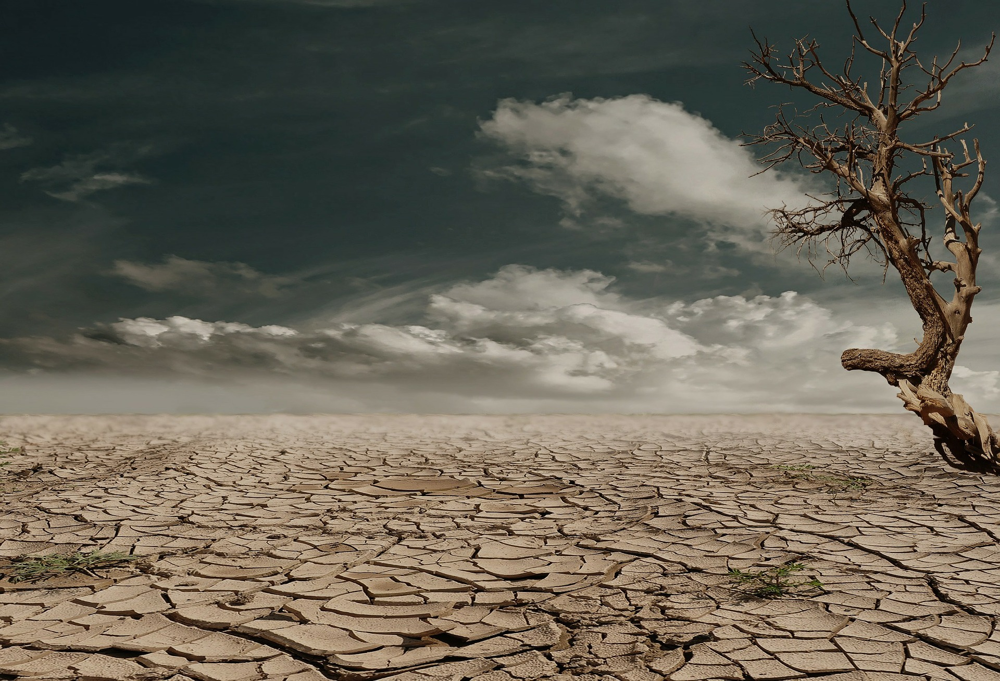

Знищення лісів нарощує темпи. Зелені легені планети вирубують, щоб захопити землі для інших цілей. За деякими оцінками 7,3 млн гектарів лісу ми втрачаємо щорічно, а це становить приблизно розмір країни Панами. Експерти з лісових господарств називають метод суцільної вирубки «екологічної травмою, яка не має рівних в природі, окрім, хіба що, великого виверження вулкана». Ліс - це складна екосистема, яка зачіпає майже кожен вид живого на планеті. Прибрати ліс з цього ланцюга рівнозначно руйнування екологічної рівноваги як в регіоні, так і в усьому світі.
Посадка дерев може пом'якшити шкоди, викликаний вирубкою лісів, але не вирішить ситуацію в корені. На додаток до відновлення лісів застосовуються і інші тактики. Це перехід людства до харчування на рослинній основі, що дозволить знизити потребу в землях, які розчищаються для тваринництва. Global Forest Watch виступила ініціатором проекту з протидії вирубці лісів через усвідомлення. Організація використовує супутникові технології, відкриті дані і краудсорсінг для виявлення і попередження вирубки лісів. Їх інтернет-спільнота також пропонує людям поділитися особистим досвідом - які негативні наслідки вони зазнали в результаті зникнення лісу.
